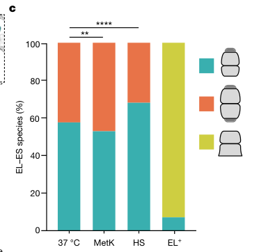

GroEL (Cpn60/Hsp60; locus PP_1361) is the Group I bacterial chaperonin of Pseudomonas putida KT2440. It is an ~800 kDa cytoplasmic complex assembled from two stacked heptameric rings (a tetradecamer) that, together with its co-chaperonin GroES (PP_1360, a heptameric lid), forms the GroEL-GroES folding machine. GroEL binds non-native polypeptides via hydrophobic surfaces in its apical domains and hydrolyzes ATP at its equatorial domains; ATP and GroES binding enclose the substrate in a hydrophilic nano-cage that promotes productive folding, after which the folded product is released through an ATP-driven allosteric cycle. It assists the folding and refolding of newly synthesized and stress-denatured cytosolic proteins, preventing aggregation and supporting recovery from proteotoxic stress. In P. putida the groESL operon is part of the RpoH (sigma-32) heat-shock regulon and is induced by heat, solvent/aromatic exposure, and elevated pressure/oxygen, reflecting its central role in maintaining proteostasis. EC 5.6.1.7.
| GO Term | Evidence | Action | Reason |
|---|---|---|---|
|
GO:0005524
ATP binding
|
IEA
GO_REF:0000120 |
ACCEPT |
Summary: GroEL binds and hydrolyzes ATP at its equatorial domains to drive the folding cycle; the UniProt record annotates multiple ATP-binding residues.
Reason: ATP binding is a well-established, conserved molecular function of GroEL and is directly supported by structural and biochemical evidence across the chaperonin family.
|
|
GO:0005737
cytoplasm
|
IEA
GO_REF:0000120 |
ACCEPT |
Summary: GroEL is a soluble cytoplasmic chaperonin; in situ cryo-electron tomography has directly visualized GroEL-GroES complexes inside bacterial cells.
Reason: Cytoplasmic localization is correct and well supported for bacterial GroEL.
|
|
GO:0006457
protein folding
|
IEA
GO_REF:0000002 |
ACCEPT |
Summary: Assisting protein folding is the core biological process of GroEL, which encapsulates non-native substrates and provides an environment optimized to promote folding.
Reason: Directly captures the central biological role of the chaperonin and is consistent with the UniProt FUNCTION annotation and extensive literature.
|
|
GO:0042026
protein refolding
|
IEA
GO_REF:0000120 |
ACCEPT |
Summary: GroEL refolds stress-denatured proteins; in P. putida it is induced under heat, solvent, and pressure stress as part of the RpoH regulon to restore proteostasis.
Reason: Protein refolding is an accurate and more specific aspect of GroEL function, complementing the broader protein folding term.
|
|
GO:0140662
ATP-dependent protein folding chaperone
|
IEA
GO_REF:0000002 |
ACCEPT |
Summary: GroEL is the prototypical ATP-dependent (chaperonin) folding machine, coupling ATP binding/hydrolysis to substrate encapsulation and folding with its co-chaperonin GroES.
Reason: This is the most precise molecular function term for GroEL and is strongly supported; it represents a core function of the gene.
|
Q: Which P. putida KT2440 proteins are obligate or stringent GroEL-GroES clients, and does the client set differ from that of E. coli given KT2440's distinct metabolic repertoire?
Experiment: Conditional depletion or temperature-sensitive groEL alleles in KT2440 combined with quantitative proteomics/aggregation profiling to define the in vivo obligate substrate set under normal and solvent/heat stress conditions.
The research report should be a detailed narrative explaining the function, biological processes, and localization of the gene product. Citations should be given for all claims.
You should prioritize authoritative reviews and primary scientific literature when conducting research. You can supplement
this with annotations you find in gene/protein databases, but these can be outdated or inaccurate.
We are specifically interested in the primary function of the gene - for enzymes, what reaction is catalyzed, and what is the substrate specificity? For transporters, what is the substrate? For structural proteins or adapters, what is the broader structural role? For signaling molecules, what is the role in the pathway.
We are interested in where in or outside the cell the gene product carries out its function.
We are also interested in the signaling or biochemical pathways in which the gene functions. We are less interested in broad pleiotropic effects, except where these elucidate the precise role.
Include evidence where possible. We are interested in both experimental evidence as well as inference from structure, evolution, or bioinformatic analysis. Precise studies should be prioritized over high-throughput, where available.
The requested target is the GroEL (Cpn60/Hsp60) chaperonin encoded by groEL (syn. groL) in Pseudomonas putida strain KT2440, with ordered locus name PP_1361 (UniProt Q88N55). In a KT2440 transcriptome dataset, PP_1361 is explicitly annotated as “chaperonin 60 kDa (groEL)” and is co-induced with its cognate cochaperonin groES (PP_1360) under stress-response categories, which matches the UniProt-provided identity and domain/family expectations for bacterial GroEL. (follonier2013newinsightson pages 5-6)
GroEL is a Group I bacterial chaperonin (EC 5.6.1.7) that assists folding of non-native proteins in an ATP-dependent reaction cycle with its obligate co-chaperonin GroES. Structurally, GroEL is a ~800 kDa complex formed by two back-to-back heptameric rings (a tetradecamer); GroES is a heptameric “lid” that caps one end of GroEL. (wagner2024visualizingchaperoninfunction pages 1-2)
GroEL recognizes non-native substrates primarily via hydrophobic binding sites in apical domains, whereas the equatorial domains bind and hydrolyze ATP. ATP binding promotes major conformational changes that allow GroES to bind and cap the substrate-containing ring (the cis ring), displacing the client into a now hydrophilic, enclosed folding chamber where folding proceeds during ATP hydrolysis. The opposite (trans) ring can bind a new substrate; ATP binding to the trans ring triggers cis-chamber opening and GroES dissociation through negative inter-ring allostery, releasing the folded product to the cytosol. (wagner2024visualizingchaperoninfunction pages 1-2, wagner2024visualizingchaperoninfunction pages 5-6)
A recent cryo-EM study summarized that the GroEL–GroES chamber can accommodate proteins up to approximately ~60–70 kDa; many canonical bacterial clients are in the 20–40 kDa range with a sharp drop above ~50 kDa. In cells, GroEL–GroES is estimated to assist folding of roughly ~10% of newly synthesized proteins (noting this is a general bacterial estimate rather than KT2440-specific). (gardner2023structuralbasisof pages 1-2, wagner2024visualizingchaperoninfunction pages 1-2)
GroEL is an intracellular (cytosolic) chaperonin machine. In situ cryo-electron tomography directly visualized GroEL–GroES complexes inside bacterial cells, consistent with a cytosolic protein-folding role rather than a periplasmic or extracellular localization. (wagner2024visualizingchaperoninfunction pages 1-2, wagner2024visualizingchaperoninfunction pages 3-4)
For KT2440, groEL (PP_1361) encodes the 60 kDa chaperonin GroEL, functioning as the core ATP-dependent folding machine in the GroEL/GroES proteostasis module. Its primary biological role is expected to be assisting folding/refolding of stress-labile or newly synthesized cytosolic proteins, preventing aggregation and enabling recovery from proteotoxic stress. This is supported by its placement among induced “stress response (chaperones)” genes under multiple stress conditions in KT2440 datasets. (follonier2013newinsightson pages 5-6)
groEL is functionally coupled to groES (PP_1360), and KT2440 datasets show co-induction of groES and groEL under the same perturbations, consistent with the canonical groESL module. (dominguezcuevas2006transcriptionaltradeoffbetween pages 7-8, follonier2013newinsightson pages 5-6)
In P. putida KT strains, groEL is part of the RpoH/σ32 heat-shock response (HSR). Upon temperature upshift, the expression of classical hsp genes (including groEL) increases rapidly (within ~10 min) and correlates with the cellular level of σ32; notably, groEL mRNA can remain elevated longer than some other heat-shock transcripts (remaining high at ~30 min in one study). Additionally, GroEL/GroES participate in negative-feedback control of σ32 activity under non-stress conditions by helping bind/inactivate σ32. Under prolonged high-temperature treatment (e.g., 45°C), AlgU becomes important for controlling rpoH, linking envelope stress control to the cytosolic heat-shock program. (ito2014geneticandphenotypic pages 6-8, ito2014geneticandphenotypic pages 2-3)
A proteomic study of KT2440 exposed for 15 minutes to aromatics found that groES and groEL are induced as members of the RpoH regulon, with a stronger response to the more toxic solvents. Reported fold changes (Table 5) were:
These data support a role for GroEL in acute solvent-proteotoxic stress tolerance, consistent with solvent challenge triggering σ32-mediated chaperone induction. (dominguezcuevas2006transcriptionaltradeoffbetween pages 7-8)
In a KT2440 microarray study relevant to bioprocess/industrial reactor conditions, groES and groEL were significantly upregulated under elevated pressure and under combined elevated pressure + elevated oxygen tension:
The heat-shock sigma factor rpoH (PP_5108) was also upregulated (+1.49 and +1.57, respectively), supporting a heat-shock-like regulatory linkage under these industrially relevant stresses. (follonier2013newinsightson pages 5-6)
Quantitative proteomics of KT2440 under phenol stress reported induction of multiple heat-shock/chaperone components and described GroEL among RpoH-dependent proteins involved in the phenol stress response, although the excerpted data do not provide a groEL-specific fold-change value. (santos2004insightsintopseudomonas pages 6-7)
A 2023 cryo-EM study resolved multiple GroEL states with a model substrate (Rubisco) and provided structural answers to how GroEL couples nucleotide binding to substrate encapsulation. Key findings include a strongly asymmetric ATP-bound ring in which four subunits remain in a substrate-engaged state while three subunits adopt a GroES-accepting conformation even before GroES binds, providing a mechanistic basis for GroES recruitment without premature substrate release. The study also supports a model in which apical domains undergo large motions (swing/rotation) that can stretch/force-unfold multivalently bound substrates, and it emphasizes a deeper contribution of the C-terminal tails to substrate interactions after ATP binding. (gardner2023structuralbasisof pages 7-8, gardner2023structuralbasisof pages 1-2)
A 2024 Nature study directly visualized GroEL–GroES complexes in situ and quantified the distributions of functional states. Across growth conditions, approximately 55–70% of GroEL complexes were asymmetric (EL–ES1) with GroES bound to one ring and substrate bound to the opposite ring (substrate-acceptor state), while the remainder were symmetric (EL–ES2). At 37°C, EL–ES1:EL–ES2 was approximately 60:40, and after heat stress EL–ES1 rose to ~70%. The study also quantified cellular abundance relative to ribosomes (median GroEL:ribosome ≈ 1:23 at 37°C and ≈ 1:10 after heat stress), consistent with roughly a threefold induction of GroEL relative to ribosomes after heat stress. These “native state” constraints are highly relevant when interpreting groEL induction in proteomics/transcriptomics of environmental Gram-negative bacteria like P. putida. (wagner2024visualizingchaperoninfunction pages 2-3, wagner2024visualizingchaperoninfunction media 7cb5f370, wagner2024visualizingchaperoninfunction pages 1-2)
Because groEL (with groES) is induced under industrially relevant perturbations—e.g., solvent exposure (toluene/o-xylene) and pressure/oxygen tension shifts—its transcription/protein abundance is commonly used as part of a stress-response readout when diagnosing process limitations or engineering tolerance in P. putida platforms. The pressure/oxygen dataset was explicitly designed to mimic bioreactor-relevant conditions and identifies groESL induction within a broader stress-response reprogramming. (follonier2013newinsightson pages 5-6, dominguezcuevas2006transcriptionaltradeoffbetween pages 7-8)
The 2024 in situ quantification provides actionable guidance for synthetic biology and antimicrobial concepts targeting GroEL: the system operates predominantly in an asymmetric EL–ES1 cycle in vivo and changes its state distribution and abundance under stress. This can influence strategies that attempt to modulate proteostasis capacity (e.g., by tuning groESL expression levels) because imbalances between GroEL and GroES can bias the cycling mode. (wagner2024visualizingchaperoninfunction pages 2-3, wagner2024visualizingchaperoninfunction pages 5-6)
| Aspect | Summary | Evidence/Citation |
|---|---|---|
| Verified identity / annotation | groEL / groL, locus PP_1361, encodes the 60 kDa chaperonin GroEL (Cpn60/Hsp60 family) in Pseudomonas putida KT2440; in KT2440 transcriptomics tables it is explicitly annotated as "chaperonin 60 kDa" and co-listed with groES (PP_1360) under stress-response chaperones, matching UniProt Q88N55. | Direct KT2440 annotation and co-listing with groES under stress-response category (follonier2013newinsightson pages 5-6) |
| Primary molecular function | GroEL is the bacterial Group I chaperonin that assists folding of non-native proteins in an ATP-dependent GroEL/GroES cycle. GroEL is a double-ring tetradecamer; apical domains bind non-native substrates, equatorial domains bind/hydrolyze ATP, and ATP-driven GroES capping creates a protected folding chamber. The system can also promote forced unfolding/stretching of misfolded intermediates before productive encapsulation. | Mechanistic and structural synthesis from 2023–2024 structural studies (wagner2024visualizingchaperoninfunction pages 1-2, gardner2023structuralbasisof pages 1-2, gardner2023structuralbasisof pages 7-8) |
| Subcellular localization | Functional localization is cytosolic: GroEL forms a soluble intracellular chaperonin complex that binds client proteins in the cytosol and encapsulates them inside the GroEL/GroES chamber before release back to the cytosol. In situ work visualized GroEL–GroES directly inside bacterial cells. | In situ intracellular visualization and chamber-based folding cycle (wagner2024visualizingchaperoninfunction pages 1-2, wagner2024visualizingchaperoninfunction pages 3-4) |
| Operon / obligate partner | groES (PP_1360) is the cognate co-chaperonin partner immediately associated with groEL (PP_1361) in KT2440 datasets; both genes are induced together in multiple stress conditions, consistent with the canonical groESL module. | Co-induction of PP_1360 groES and PP_1361 groEL in KT2440 stress datasets (dominguezcuevas2006transcriptionaltradeoffbetween pages 7-8, follonier2013newinsightson pages 5-6) |
| Regulation | In P. putida, groEL/groES belong to the RpoH/σ32 heat-shock regulon. Heat shock increases σ32 (RpoH) and hsp-gene expression, with groEL induction persisting longer than several other hsps. GroEL/GroES also participate in negative-feedback control by helping bind/inactivate σ32 under non-stress conditions. At prolonged 45°C treatment, AlgU contributes importantly to rpoH control. | RpoH linkage, sustained groEL induction, and AlgU involvement in prolonged heat stress (ito2014geneticandphenotypic pages 6-8, ito2014geneticandphenotypic pages 2-3) |
| KT2440 stress response: aromatic stress | 15 min aromatic challenge in KT2440 induces groES/groEL as part of the RpoH heat-shock response. Reported fold changes: groES = 1.00 (toluene), 1.50 (o-xylene), 1.45 (3MB); groEL = 1.10 (toluene), 1.83 (o-xylene), 1.24 (3MB). Induction strength followed toxicity order o-xylene > toluene > 3MB in this dataset. | Quantitative KT2440 protein fold changes after aromatic exposure (dominguezcuevas2006transcriptionaltradeoffbetween pages 7-8) |
| KT2440 stress response: elevated pressure / oxygen | Under elevated pressure, KT2440 upregulated groES +1.61 and groEL +1.78; under combined elevated pressure + elevated oxygen, groES +1.77 and groEL +2.19. rpoH also increased (+1.49 and +1.57, respectively), supporting heat-shock-like regulation of groESL. | KT2440 microarray data under industrially relevant pressure/oxygen conditions (follonier2013newinsightson pages 5-6) |
| KT2440 stress response: heat shock time course | In P. putida KT strains, hsp genes including groEL increase within 10 min after temperature upshift and correlate with rising σ32. Unlike some other hsp transcripts, groEL mRNA remained high after 30 min, indicating a relatively sustained response. | Heat-shock kinetics in P. putida (ito2014geneticandphenotypic pages 6-8) |
| KT2440 stress response: phenol | Phenol stress in KT2440 induces a broader chaperone/heat-shock program; GroEL is described as among the RpoH-dependent proteins upregulated after phenol exposure, though the excerpted evidence does not provide a groEL-specific fold change. | Phenol-triggered chaperone response with GroEL noted qualitatively (santos2004insightsintopseudomonas pages 6-7) |
| 2023–2024 mechanistic update: asymmetric ATP-bound state | Cryo-EM showed a strongly asymmetric ATP-bound GroEL ring in which 4 subunits remain in a substrate-engaged state while 3 subunits adopt a GroES-accepting conformation, explaining how GroEL can recruit GroES without losing substrate prematurely. | Structural basis of substrate progression through the cycle (gardner2023structuralbasisofa pages 15-17, gardner2023structuralbasisof pages 7-8) |
| 2024 in situ quantification | In cells, ~55–70% of GroEL complexes are asymmetric EL–ES1 (single-GroES-capped), with the remainder symmetric EL–ES2. At 37°C, EL–ES1:EL–ES2 is about 60:40; after heat stress, EL–ES1 rises to about 70%. | In situ cryo-ET figure/table quantification (wagner2024visualizingchaperoninfunction pages 1-2, wagner2024visualizingchaperoninfunction pages 2-3, wagner2024visualizingchaperoninfunction media 7cb5f370) |
| 2024 abundance / stoichiometry in cells | The GroEL:ribosome ratio in tomograms was about 1:23 at 37°C and about 1:10 after heat stress, indicating roughly 3-fold induction of GroEL relative to ribosomes. Heat stress also caused about 3-fold increases in GroEL and GroES abundance. | In situ cellular quantification under normal vs heat-stress conditions (wagner2024visualizingchaperoninfunction pages 2-3, wagner2024visualizingchaperoninfunction media 7cb5f370) |
| Client scope / pathway role | GroEL–GroES is estimated to assist folding of about ~10% of newly synthesized proteins in bacteria. The folding chamber generally accommodates proteins up to ~60–70 kDa; most canonical clients are 20–40 kDa, with a marked drop above ~50 kDa. | Client fraction and chamber-size/client-size constraints (wagner2024visualizingchaperoninfunction pages 1-2, gardner2023structuralbasisof pages 1-2) |
Table: This table condenses the verified identity, core function, regulation, localization, KT2440-specific stress responses, and 2023–2024 mechanistic insights for groEL (Q88N55/PP_1361). It is useful as a compact evidence map for functional annotation and biological interpretation.
References
(follonier2013newinsightson pages 5-6): Stéphanie Follonier, Isabel F Escapa, Pilar M Fonseca, Bernhard Henes, Sven Panke, Manfred Zinn, and María Auxiliadora Prieto. New insights on the reorganization of gene transcription in pseudomonas putida kt2440 at elevated pressure. Microbial Cell Factories, 12:30-30, Mar 2013. URL: https://doi.org/10.1186/1475-2859-12-30, doi:10.1186/1475-2859-12-30. This article has 46 citations and is from a peer-reviewed journal.
(wagner2024visualizingchaperoninfunction pages 1-2): Jonathan Wagner, Alonso I. Carvajal, Andreas Bracher, Florian Beck, William Wan, Stefan Bohn, Roman Körner, Wolfgang Baumeister, Ruben Fernandez-Busnadiego, and F. Ulrich Hartl. Visualizing chaperonin function in situ by cryo-electron tomography. Nature, 633:459-464, Aug 2024. URL: https://doi.org/10.1038/s41586-024-07843-w, doi:10.1038/s41586-024-07843-w. This article has 32 citations and is from a highest quality peer-reviewed journal.
(wagner2024visualizingchaperoninfunction pages 5-6): Jonathan Wagner, Alonso I. Carvajal, Andreas Bracher, Florian Beck, William Wan, Stefan Bohn, Roman Körner, Wolfgang Baumeister, Ruben Fernandez-Busnadiego, and F. Ulrich Hartl. Visualizing chaperonin function in situ by cryo-electron tomography. Nature, 633:459-464, Aug 2024. URL: https://doi.org/10.1038/s41586-024-07843-w, doi:10.1038/s41586-024-07843-w. This article has 32 citations and is from a highest quality peer-reviewed journal.
(gardner2023structuralbasisof pages 1-2): Scott Gardner, Michele C. Darrow, Natalya Lukoyanova, Konstantinos Thalassinos, and Helen R. Saibil. Structural basis of substrate progression through the bacterial chaperonin cycle. Proceedings of the National Academy of Sciences of the United States of America, Dec 2023. URL: https://doi.org/10.1073/pnas.2308933120, doi:10.1073/pnas.2308933120. This article has 15 citations and is from a highest quality peer-reviewed journal.
(wagner2024visualizingchaperoninfunction pages 3-4): Jonathan Wagner, Alonso I. Carvajal, Andreas Bracher, Florian Beck, William Wan, Stefan Bohn, Roman Körner, Wolfgang Baumeister, Ruben Fernandez-Busnadiego, and F. Ulrich Hartl. Visualizing chaperonin function in situ by cryo-electron tomography. Nature, 633:459-464, Aug 2024. URL: https://doi.org/10.1038/s41586-024-07843-w, doi:10.1038/s41586-024-07843-w. This article has 32 citations and is from a highest quality peer-reviewed journal.
(dominguezcuevas2006transcriptionaltradeoffbetween pages 7-8): Patricia Domínguez-Cuevas, José-Eduardo González-Pastor, Silvia Marqués, Juan-Luis Ramos, and Víctor de Lorenzo. Transcriptional tradeoff between metabolic and stress-response programs in pseudomonas putida kt2440 cells exposed to toluene*. Journal of Biological Chemistry, 281:11981-11991, Apr 2006. URL: https://doi.org/10.1074/jbc.m509848200, doi:10.1074/jbc.m509848200. This article has 269 citations and is from a domain leading peer-reviewed journal.
(ito2014geneticandphenotypic pages 6-8): Fumihiro Ito, Takayuki Tamiya, Iwao Ohtsu, Makoto Fujimura, and Fumiyasu Fukumori. Genetic and phenotypic characterization of the heat shock response in pseudomonas putida. MicrobiologyOpen, 3:922-936, Oct 2014. URL: https://doi.org/10.1002/mbo3.217, doi:10.1002/mbo3.217. This article has 28 citations and is from a peer-reviewed journal.
(ito2014geneticandphenotypic pages 2-3): Fumihiro Ito, Takayuki Tamiya, Iwao Ohtsu, Makoto Fujimura, and Fumiyasu Fukumori. Genetic and phenotypic characterization of the heat shock response in pseudomonas putida. MicrobiologyOpen, 3:922-936, Oct 2014. URL: https://doi.org/10.1002/mbo3.217, doi:10.1002/mbo3.217. This article has 28 citations and is from a peer-reviewed journal.
(santos2004insightsintopseudomonas pages 6-7): Pedro M. Santos, Dirk Benndorf, and Isabel Sá‐Correia. Insights into pseudomonas putida kt2440 response to phenol‐induced stress by quantitative proteomics. PROTEOMICS, 4:2640-2652, Sep 2004. URL: https://doi.org/10.1002/pmic.200300793, doi:10.1002/pmic.200300793. This article has 282 citations and is from a peer-reviewed journal.
(gardner2023structuralbasisof pages 7-8): Scott Gardner, Michele C. Darrow, Natalya Lukoyanova, Konstantinos Thalassinos, and Helen R. Saibil. Structural basis of substrate progression through the bacterial chaperonin cycle. Proceedings of the National Academy of Sciences of the United States of America, Dec 2023. URL: https://doi.org/10.1073/pnas.2308933120, doi:10.1073/pnas.2308933120. This article has 15 citations and is from a highest quality peer-reviewed journal.
(wagner2024visualizingchaperoninfunction pages 2-3): Jonathan Wagner, Alonso I. Carvajal, Andreas Bracher, Florian Beck, William Wan, Stefan Bohn, Roman Körner, Wolfgang Baumeister, Ruben Fernandez-Busnadiego, and F. Ulrich Hartl. Visualizing chaperonin function in situ by cryo-electron tomography. Nature, 633:459-464, Aug 2024. URL: https://doi.org/10.1038/s41586-024-07843-w, doi:10.1038/s41586-024-07843-w. This article has 32 citations and is from a highest quality peer-reviewed journal.
(wagner2024visualizingchaperoninfunction media 7cb5f370): Jonathan Wagner, Alonso I. Carvajal, Andreas Bracher, Florian Beck, William Wan, Stefan Bohn, Roman Körner, Wolfgang Baumeister, Ruben Fernandez-Busnadiego, and F. Ulrich Hartl. Visualizing chaperonin function in situ by cryo-electron tomography. Nature, 633:459-464, Aug 2024. URL: https://doi.org/10.1038/s41586-024-07843-w, doi:10.1038/s41586-024-07843-w. This article has 32 citations and is from a highest quality peer-reviewed journal.
(gardner2023structuralbasisofa pages 15-17): Scott Gardner, Michele C. Darrow, Natasha Lukyanova, Konstantinos Thalassinos, and Helen R. Saibil. Structural basis of substrate progression through the chaperonin cycle. bioRxiv, May 2023. URL: https://doi.org/10.1101/2023.05.29.542693, doi:10.1101/2023.05.29.542693. This article has 0 citations.

id: Q88N55
gene_symbol: groEL
product_type: PROTEIN
status: DRAFT
taxon:
id: NCBITaxon:160488
label: Pseudomonas putida (strain ATCC 47054 / DSM 6125 / CFBP 8728 / NCIMB 11950 / KT2440)
description: GroEL (Cpn60/Hsp60; locus PP_1361) is the Group I bacterial chaperonin of Pseudomonas putida KT2440. It is an ~800 kDa cytoplasmic complex assembled from two stacked heptameric rings (a tetradecamer) that, together with its co-chaperonin GroES (PP_1360, a heptameric lid), forms the GroEL-GroES folding machine. GroEL binds non-native polypeptides via hydrophobic surfaces in its apical domains and hydrolyzes ATP at its equatorial domains; ATP and GroES binding enclose the substrate in a hydrophilic nano-cage that promotes productive folding, after which the folded product is released through an ATP-driven allosteric cycle. It assists the folding and refolding of newly synthesized and stress-denatured cytosolic proteins, preventing aggregation and supporting recovery from proteotoxic stress. In P. putida the groESL operon is part of the RpoH (sigma-32) heat-shock regulon and is induced by heat, solvent/aromatic exposure, and elevated pressure/oxygen, reflecting its central role in maintaining proteostasis. EC 5.6.1.7.
existing_annotations:
- term:
id: GO:0005524
label: ATP binding
evidence_type: IEA
original_reference_id: GO_REF:0000120
qualifier: enables
review:
summary: GroEL binds and hydrolyzes ATP at its equatorial domains to drive the folding cycle; the UniProt record annotates multiple ATP-binding residues.
action: ACCEPT
reason: ATP binding is a well-established, conserved molecular function of GroEL and is directly supported by structural and biochemical evidence across the chaperonin family.
- term:
id: GO:0005737
label: cytoplasm
evidence_type: IEA
original_reference_id: GO_REF:0000120
qualifier: located_in
review:
summary: GroEL is a soluble cytoplasmic chaperonin; in situ cryo-electron tomography has directly visualized GroEL-GroES complexes inside bacterial cells.
action: ACCEPT
reason: Cytoplasmic localization is correct and well supported for bacterial GroEL.
- term:
id: GO:0006457
label: protein folding
evidence_type: IEA
original_reference_id: GO_REF:0000002
qualifier: involved_in
review:
summary: Assisting protein folding is the core biological process of GroEL, which encapsulates non-native substrates and provides an environment optimized to promote folding.
action: ACCEPT
reason: Directly captures the central biological role of the chaperonin and is consistent with the UniProt FUNCTION annotation and extensive literature.
- term:
id: GO:0042026
label: protein refolding
evidence_type: IEA
original_reference_id: GO_REF:0000120
qualifier: involved_in
review:
summary: GroEL refolds stress-denatured proteins; in P. putida it is induced under heat, solvent, and pressure stress as part of the RpoH regulon to restore proteostasis.
action: ACCEPT
reason: Protein refolding is an accurate and more specific aspect of GroEL function, complementing the broader protein folding term.
- term:
id: GO:0140662
label: ATP-dependent protein folding chaperone
evidence_type: IEA
original_reference_id: GO_REF:0000002
qualifier: enables
review:
summary: GroEL is the prototypical ATP-dependent (chaperonin) folding machine, coupling ATP binding/hydrolysis to substrate encapsulation and folding with its co-chaperonin GroES.
action: ACCEPT
reason: This is the most precise molecular function term for GroEL and is strongly supported; it represents a core function of the gene.
core_functions:
- description: ATP-dependent chaperonin that mediates the folding and refolding of non-native cytosolic polypeptides, preventing aggregation, by encapsulating substrates in the GroEL-GroES nano-cage and coupling folding to an ATP-driven allosteric cycle.
supported_by:
- reference_id: GO_REF:0000002
supporting_text: GroEL annotated as ATP-dependent protein folding chaperone and involved in protein folding via InterPro Cpn60/GroEL records.
- reference_id: PMID:39169181
supporting_text: GroEL forms a double-ring tetradecamer; apical domains bind non-native substrates and equatorial domains bind/hydrolyze ATP, with GroES capping to form a protected folding chamber in the cytosol.
full_text_unavailable: true
molecular_function:
id: GO:0140662
label: ATP-dependent protein folding chaperone
directly_involved_in:
- id: GO:0006457
label: protein folding
proposed_new_terms: []
suggested_questions:
- question: Which P. putida KT2440 proteins are obligate or stringent GroEL-GroES clients, and does the client set differ from that of E. coli given KT2440's distinct metabolic repertoire?
suggested_experiments:
- description: Conditional depletion or temperature-sensitive groEL alleles in KT2440 combined with quantitative proteomics/aggregation profiling to define the in vivo obligate substrate set under normal and solvent/heat stress conditions.
references:
- id: GO_REF:0000002
title: Gene Ontology annotation through association of InterPro records with GO terms
findings: []
- id: GO_REF:0000120
title: Combined Automated Annotation using Multiple IEA Methods
findings: []
- id: PMID:39169181
title: Visualizing chaperonin function in situ by cryo-electron tomography
findings:
- statement: In situ cryo-electron tomography directly visualized cytosolic GroEL-GroES complexes inside bacterial cells and quantified asymmetric (EL-ES1) and symmetric (EL-ES2) functional states of the folding cycle.
reference_section_type: RESULTS
full_text_unavailable: true
reference_review:
relevance: HIGH
correctness: VERIFIED
review_notes: 'Citation-integrity fix: the report originally carried PMID:38987603, which actually resolves to an unrelated paper (CryoET of beta-amyloid and tau in Alzheimer brain). The intended reference is Wagner et al., Nature 2024 (doi:10.1038/s41586-024-07843-w), recovered via doi_to_pmid to PMID:39169181 and PubMed-verified as "Visualizing chaperonin function in situ by cryo-electron tomography." Wrong identifier replaced and the current PMID is correct. Abstract-only; supports the general bacterial GroEL mechanism/localization, not KT2440-specific assays.'
{kind=link}